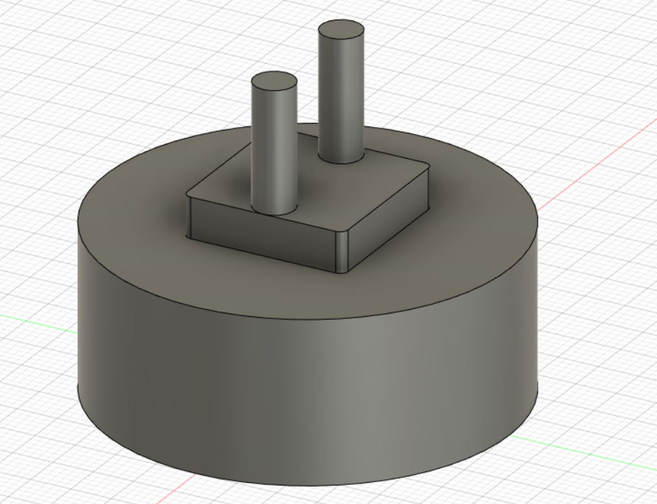
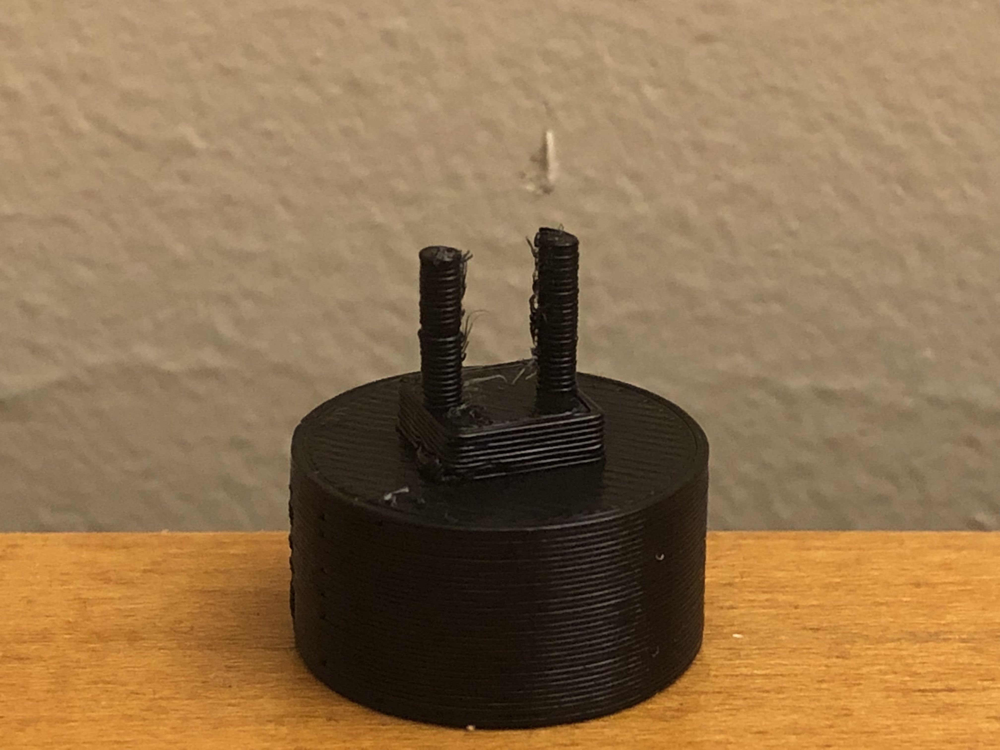
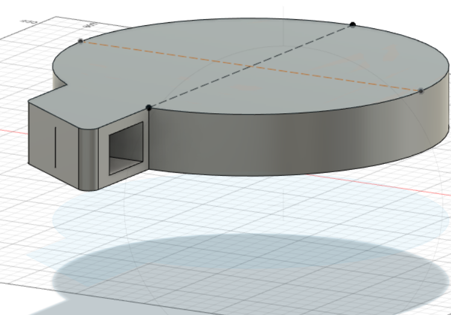
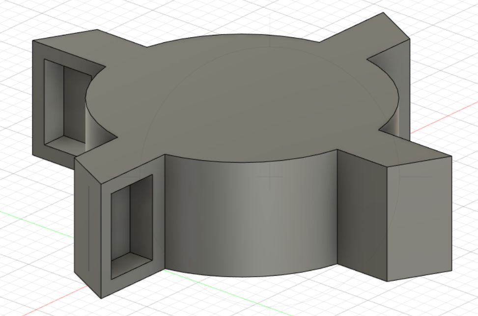
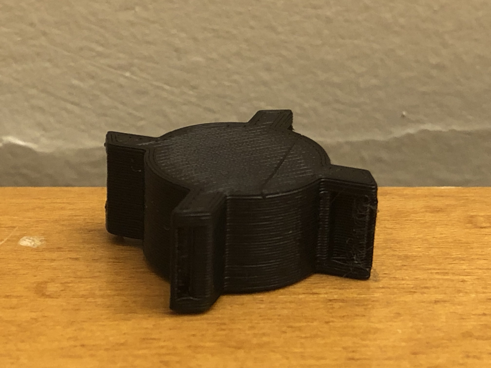

Week 2: Electronics and Tools
For my 3D printing assignment I first had to make a quick 10 minute print, I chose to make an chargers
I remember always needing chargers like these every time I went to Europe or else I wouldnt be able to charge anything
Me and my family would always fight for who got to use them first so it was pretty cool to model and make a small version without purpose
It was a pretty small print but I was happy with how it turned out. I plan to keep it as a memento of my time at harvard and my trips to Europe
However, memories can only get me so far and it was time to look toward the future, my upcoming final project
I decided it would be a good idea to model out the wheel that will scoop up the dirt
The first draft of this wasnt very succesful as I had a lot of trouble making multiple of the notches that collect the dirt
The second draft was a lot better, but while I was printing I realized a couple flaws, for starters I had to find a way to make the inside of the wheel hollow to hold the dirt
The second problem was that there were some holes in the print that shouldnt have been there, a problem with my poor modeling in fusion360 for sure
Now that im a bit more experienced with 3D printing I do plan on working on this again whenever I get the chance
Will update when I can